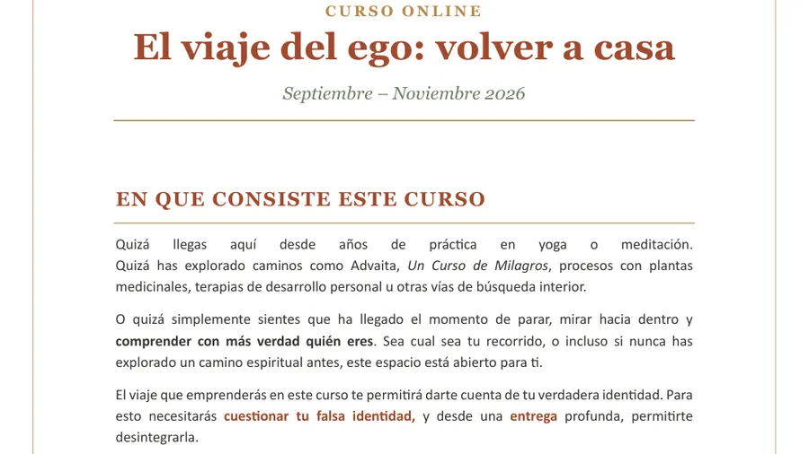
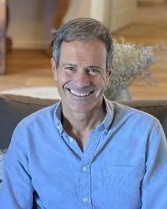

Volver a casa.
El viaje del ego
Un espacio de exploración interior y práctica para quienes sienten la llamada de profundizar en sí mismos y regresar a su verdadero Ser.
¿Realmente soy esto? ¿Qué conforma eso que creo sobre mí? Mi cuerpo, mi nombre, mis gustos, mis emociones, mis pensamientos, mis recuerdos…
Quizá llegas aquí desde años de práctica en yoga o meditación. Quizá has explorado caminos como Advaita, Un Curso de Milagros, procesos con plantas medicinales, terapias de desarrollo personal u otras vías de búsqueda interior. O quizá simplemente sientes que ha llegado el momento de parar, mirar hacia dentro y comprender con más verdad quién eres. Sea cual sea tu recorrido, este espacio está abierto para ti.
A través de una integración entre Advaita, la filosofía y la práctica del Yoga y principios presentes también en caminos como Un Curso de Milagros, recorreremos de forma sencilla y profunda el proceso de tu reconocimiento interior. Además del proceso personal, el grupo será una parte esencial del recorrido: un espacio de encuentro, intercambio y confrontación consciente.
No es necesario compartir una misma filosofía, lenguaje o tradición. Lo único necesario es una disposición sincera a cuestionar, observar y abrirse a una experiencia más directa y profunda de uno mismo. Nosotros ofrecemos el espacio, la guía y las herramientas. El descubrimiento será siempre tuyo.
Seis etapas para volver a casa
Sentir la llamada de regresar a casa
Reconocer esa inquietud interior o impulso profundo de conocernos.
Volver sobre nuestros propios pasos
Observar y cuestionar todo aquello que creemos ser, pero que quizá no somos.
Identificar el ego y desintegrar las falsas identidades
Comprender cómo se forma el ego, cómo opera y cómo influye en nuestra percepción.
Reconocernos
Abrir espacio para descubrir directamente nuestra esencia más profunda, aquello que permanece más allá de toda historia personal.
Habitar el Ser
Aprender a vivir desde una presencia más auténtica, clara y en paz, también en lo cotidiano.
Estabilizarse en la verdad de lo que somos
Permanecer cada vez más en esa verdad interior, para que de ella surjan elecciones más conscientes y alineadas.
Para que la comprensión se haga experiencia
- Espacios de explicación y transmisión de enseñanzas.
- Momentos de preguntas, diálogo y confrontación consciente.
- Reflexión y observación personal guiada.
- Prácticas de respiración, movimiento emocional y meditación para integrar, anclar, regular y liberar.
- Acompañamiento grupal dentro del proceso.
- Material de apoyo y prácticas guiadas entre encuentros.
Tres meses, en directo
Encuentros online en directo por Zoom dos veces al mes, de 18:30 a 20:30. Además, tendrás acceso a una plataforma online con las grabaciones de los encuentros y materiales complementarios.
Será importante contar con: buena conexión a internet, cámara y una libreta para apuntes y reflexión personal.
Edición en curso: septiembre - diciembre de 2026.
Fechas de los encuentros: 16 y 30 de septiembre, 7 y 21 de octubre, 25 de noviembre y 9 de diciembre de 2026 (Zoom, 18:30-20:30).
Próxima edición: a partir de enero de 2027. Escríbenos y te avisamos cuando abran las inscripciones y la sesión gratuita de presentación. [Pendiente: fechas exactas y precio de la edición de enero de 2027]
Facilitadores del curso

Erik Maiquez
Formador e instructor con más de 10 años de experiencia acompañando grupos de desarrollo personal y procesos individuales de sanación. Terapeuta emocional, coach y especialista en sanación emocional a través del cuerpo.

Miquel Canut
Terapeuta y coach con más de 18 años de experiencia. Formado en EE. UU. como Spiritual Coach y Life Coach, especializado en PNL y Un Curso de Milagros.

Melania Di Vara
Formadora en Yoga, Meditación y Ayurveda con más de 10 años de experiencia, formada en escuelas tradicionales de India.
Qué incluye
- Acceso a todo el contenido del curso.
- Material de apoyo y grabaciones de las sesiones.
- Sesiones grupales en directo de 2 horas (2 encuentros al mes).
- Acceso a un chat grupal para preguntas, acompañamiento y apoyo durante el proceso.
El importe puede abonarse en una sola cuota o en tres mensualidades iguales.
Antes del comienzo del curso ofrecemos una sesión online abierta y gratuita de presentación, para compartir la visión del recorrido, resolver dudas y que puedas sentir si este espacio resuena contigo.
Inscripción: escríbenos y te enviamos todos los detalles. [Pendiente: confirmar precio de la edición de enero de 2027]
Quiero más información